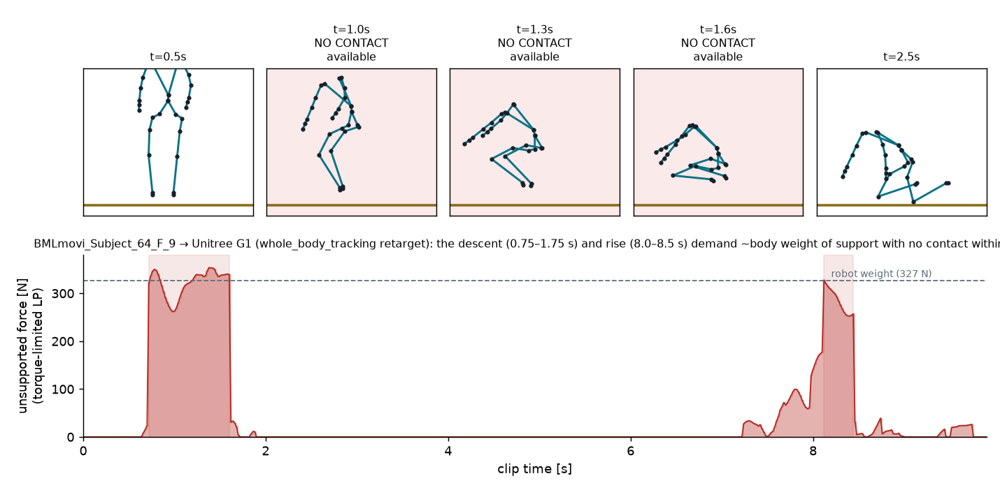
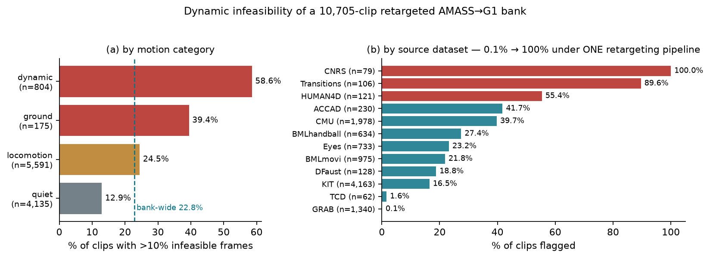
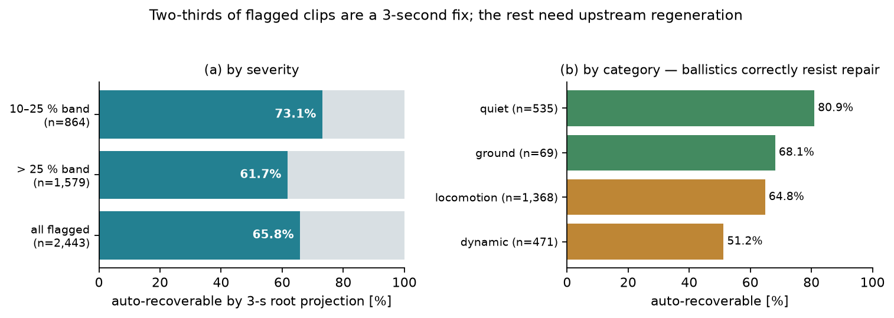

Companion note draft v0.2 (2026-08-20; v0.1 archived in git history). Target: arXiv +
workshop, submittable Sept 5. 4–6 pages. Status labels: sealed ✓ / sealed ✗ (kept) / measured /
exploratory / pending 🕐 appear on every claim, including captions. Every number cites its
artifact path (paper/RESULTS_LOG.md is the master index). Engine pins (used throughout):
MuJoCo 3.11.0 (C) · MuJoCo Warp 3.11.0 · mjlab v1.6.0 · Newton commit 7bb6d02d
(pip 1.6.0.dev0) · warp-lang 1.16.0 · Unitree G1 model g1.xml sha febdcbef…
(plan/PREREGISTRATION_G1_clip44.md §Pins). The conformance certificate is a property of this
version pair — see §6 and the re-certification spec.
Large humanoid motion-tracking systems train on tens of thousands of retargeted mocap clips that pass kinematic quality control: joint limits respected, velocities smooth, feet roughly grounded. We show that kinematic QC misses a distinct and consequential failure class — references that are dynamically impossible for the target robot given the contacts they make available — and give a screen that catches it at ~1 CPU-second per clip: contact-free inverse dynamics for the base wrench the environment must supply, then a torque-limited linear program over friction cones at the contacts within reach. On a 10,705-clip AMASS→Unitree-G1 bank [measured], 22.8 % of clips demand unsupported forces exceeding half the robot's weight for more than 10 % of their frames; the rate varies from 0.1 % to 100 % across source datasets under a single retargeting pipeline, marking it as a corpus-and-pipeline property rather than a motion property. A second production bank — the 4,950-clip BONES-SEED corpus that trains SONIC, screened by an independent re-implementation on a pre-registered test — returns 0.14 % [measured], which settles the reading: prevalence belongs to a particular corpus-and-pipeline pairing, must be measured per corpus rather than assumed from another, and at ≤ 1 CPU-second per clip is cheap enough to be a standing release gate. We validate the screen on the clip that broke a failure-adaptive training curriculum: a kneel whose retargeted descent is airborne for a full second (median 329 N unsupported against a 327 N robot weight) [measured], which a pre-registered physics-parameter gate could not rescue in any of ten configurations [sealed ✗, kept]. A two-seed rollout anomaly — increasing motor strength worsens tracking inside the flagged window — does not generalize: its sealed family/control test fails all three criteria [sealed ✗, kept]. We quantify downstream costs: contaminated evaluation sets (29/100 held-out clips) [measured], poisoned failure-weighted samplers [sealed ✓], and difficulty labels that transfer across policies only once feasibility features are added (Spearman 0.567 → 0.609 on the headline pair, permutation p = 0.010; direction positive on 6/6 pairs, 4/6 significant) [sealed ✓]. We release the screen, an error-class checklist for coupling physics stacks to RL harnesses, and recommend feasibility-stratified evaluation.
A 100-clip Unitree-G1 tracking curriculum of the BeyondMimic/mjlab family collapsed: its
failure-adaptive sampler concentrated 87–89 % of exposure on one kneel-and-crawl clip in 3/3
seeds and lost to uniform sampling (held-out survival 0.780 vs 0.810; per-seed Δ
+0.030/+0.028/+0.030) [sealed ✓; reports/campaign_summary_3arm.json,
reports/A5_coverage_dose.json; sampler mechanism filed as mjlab #1153 /
whole_body_tracking #73]. The clip itself passed every kinematic check: zero joint-limit
violations against the G1's ranges, joint speeds ≤ 5.6 rad/s, smooth [measured;
plan/N1_RESULT.md]. A pre-registered gate over physics parameters — action delay, motor
strength, foot friction, contact stiffness, contact model, torso CoM; 1,440 paired worlds —
failed its own sealed criteria: no intervention changed the clip's survival in any configuration
[sealed ✗, kept; plan/PREREGISTRATION_G1_clip44.md 41e4b20c, plan/G1_RESULT.md,
reports/G1/run0/].
What no kinematic feature could see: for the second between 0.75 s and 1.75 s of the retargeted
descent, no part of the robot's collision geometry is within 6 cm of the floor — the feet
float 7–10 cm up while the pelvis falls 0.79 → 0.40 m — so a median 329 N (p90 348 N) must come
from nowhere; the robot weighs 327 N [measured; reports/N1_clip44_knee_id.json]. The mechanism
is prosaic: the human sat back onto their heels; the G1's legs cannot fold that far; the
retargeter resolved the conflict by lifting the legs instead of lowering the root. Under frame-0
starts the clip's survival is 0.00 for every policy we trained; the previously reported 0.31 was
an artifact of averaging over start offsets that skip the impossible segment [measured;
reports/N3_baseline_uniform-s1_strat.csv] — one of two evaluation-protocol lessons this note
carries (§5). Figure 1 shows the anatomy.
Figure 1 [measured]: reference stick-frames (red panels: no contact available) and the
torque-limited unsupported force; descent and rise pinned at ≈ body weight. Script + data:
tools/n1_knee_id.py → reports/N1_clip44_knee_id.json; rendering
reports/upstream_drafts/clip44_airborne_repro.png.

Per frame of a retargeted reference: (i) q, q̇ from the clip; q̈ by smoothed central differences;
(ii) contact-free inverse dynamics (mj_inverse, contacts disabled) → the 6-D base wrench W the
environment must supply, plus contact-free joint torques; (iii) candidate contacts = collision
geoms within gap = 6 cm of the plane (exact geom distances); (iv) two solves over pyramidal
friction-cone generators at those contacts: NNLS for the unconstrained residual, and a
torque-limited LP (cone coefficients + L1 wrench slack, joint torques constrained to actuator
force ranges) for the smallest unsupported wrench any controller could leave. Clip features:
airborne_frac (no candidate contact), infeasible_frac (torque-limited unsupported > ½ weight),
unsupported_impulse_per_weight_s (seconds of free-fall equivalent), torque_infeasible_frac,
each under a uniform-μ and the simulator's own per-geom contact model. ~1 CPU-second per clip.
Stated limits: plane-only terrain; true ballistic flight is exempt by construction (a body in
free fall demands no support — q̈ ≈ g leaves no unsupported wrench), though non-ballistic floating
around take-offs is flagged, correctly (§4); the screen certifies the retargeted output on the
target robot, never the source mocap. The gap choice matters and is justified rather than assumed [measured;
reports/N1_gap_sensitivity.json]: at 3 cm even the feasible control is flagged 42 % (the bank
carries a systematic ~3 cm stance-clearance offset from retarget ground alignment, so real
contacts sit just outside a 3 cm band); at 10 cm the screen degenerates the other way (geometry
7–10 cm airborne is granted as a contact candidate and the attractor's descent reads 0 %
infeasible). 6 cm sits between the two failure modes — above the bank's clearance offset, below
physically bridgeable distance. The ½-weight bound is not delicate: the attractor's flagged-frame
fraction moves only 15.1 % → 13.1 % → 12.5 % across bounds of 0.25/0.5/0.75× weight, because the
flagged mass concentrates near 1× weight.
Tool: refeas v0.1.0 (Apache-2.0; MuJoCo + SciPy; G1 worked example whose synthetic hover clip
is flagged at 45 % infeasible — refeas/examples/demo_hover_brief.json).
Phase-resolved verdict for the attractor clip [measured; reports/N1_clip44_knee_id.json]:
standing 0–0.75 s supported (torque-limited residual 0 N); descent 0.75–1.75 s airborne in
86 % of frames, median unsupported 329 N; kneel/crawl 1.75–7.25 s fully supportable within
actuator limits even with the simulator's frictionless knees; rise 8.0–8.5 s airborne again;
final stand supported. A matched-easy control from the same bank is supported at every frame
(torque ratio p95 0.66) [measured; reports/N1_CMU76_knee_id.json]. The family is systematic:
20 of the clip's 40 nearest kneel/crawl neighbours exceed the 10 %-infeasible-frame threshold
[measured; reports/N3_candidate_feasibility.json].
Independent corroboration, from rollouts that never see the screen: with a calibrated
paired-rollout statistic (signed replicate-mean effects over a published identical-physics floor
of ≈ 0 ± 1 mm — the floor matters because identical physics already diverges 2.5–8 mm within
seconds; reports/G1/run0/g1_v2_summary.json), +15 % motor strength worsens body-position
tracking by +15.0/+16.0 mm exactly inside the screen-flagged airborne window and ≈ 0 mm
(+0.3/−1.4) in the supported standing window, replicated across two IC-seed sets
(instrument-wide agreement across all 36 axis×clip effects: r = 0.92) [exploratory — two cases; plan/N5_RESULT.md,
reports/G1/run1_seed1/g1_v2_summary.json]. The sealed generality test on 12 family clips versus
12 feasible controls fails: 7/12 family clips pass the +5 mm criterion (needed 8), only 4/12
controls stay within 2 mm (needed 8), and just 2/7 positive cases are airborne-localised
[sealed ✗, kept; reports/P_SIGN/run0/p_sign_summary.json, plan/P_SIGN_RESULT.md]. The anomaly
therefore supplies no rollout-only detector claim.
Bank-wide screen — AMASS→Unitree-G1, this pipeline, this robot (10,705 clips) [measured;
reports/feasibility_all/prevalence_report.txt, sentinel COMPLETED]:
| category | n | > 10 % infeasible frames | > 25 % | duration share flagged |
|---|---|---|---|---|
| dynamic | 804 | 58.6 % | 32.6 % | 54.5 % |
| ground-contact | 175 | 39.4 % | 18.3 % | 44.1 % |
| locomotion | 5,591 | 24.5 % | 17.4 % | 31.2 % |
| quiet | 4,135 | 12.9 % | 7.5 % | 19.8 % |
| all | 10,705 | 22.8 % | 14.8 % | 27.4 % |
By source: GRAB 0.1 %, TCD 1.6 %, KIT 16.5 %, BMLmovi 21.8 %, Eyes-Japan 23.2 %, BMLhandball
27.4 %, CMU 39.7 %, ACCAD 41.7 %, HUMAN4D 55.4 %, Transitions 89.6 %, CNRS 100 % — three
orders of magnitude of spread under one retargeter and one robot. Hand-checks of the extremes
[measured; reports/upstream_drafts/CNRS_AUDIT.md]: the CNRS clips are ordinary fast walks
whose retargeted trajectory rides ~4–5 cm high — in the median frame nothing on the robot is
within 6 cm of the floor (median lowest-geom clearance 6.2–7.7 cm; contact only momentary) — the
"lift the limb, not lower the root" failure expressed continuously; Transitions is genuinely
acrobatic content whose flagged frames are non-ballistic floating around take-off/landing
(per-clip severity moderate: 22 % vs CNRS's 57–66 %). The dynamic category's rate is partially
content-inflated the same way; the ground category's 39 % cannot be, and is the attractor's
family writ large. Figure 2 [measured]: paper/figures/f4_prevalence.png (script
f4_prevalence.py, data reports/feasibility_all/feasibility.csv).

The 22.8 % above is a measurement of one pipeline, and reporting it alone would invite the
inference that retargeted humanoid banks are generically ~20 % broken. They are not. The same
method, re-implemented independently against a different G1 model file
(g1_29dof_rev_1_0.xml, sha 15a330f1…; μ 0.7 rather than 0.6, same 6 cm gap, same ½-weight
bound), was run over every clip of the BONES-SEED bank consumed by SONIC:
| bank | clips | > 10 % infeasible | > 10 % airborne | flagged duration share |
|---|---|---|---|---|
| AMASS → whole_body_tracking → G1 (this note) | 10,705 | 22.8 % (2,442) | 23.5 % (2,512) | 27.4 % |
BONES-SEED robot_filtered → G1 (SONIC) |
4,950 | 0.14 % (7) | 2.24 % (111) | 0.09 % |
The measurement was registered before it was run, with its consequence pre-committed — a rate under
10 % descopes a planned feasibility-hygiene training ablation on that stack — and the ablation has
been descoped (P10, GR00T-WholeBodyControl/docs/prediction_register.md;
screen gear_sonic/research/hygiene/screen.py; 4,950 clips in 131.7 s wall on 8 CPU workers,
0 failures, 0.145 CPU-s/clip = 0.84 ms per screened frame).
Two things must be said about it, in this order. First, the class is not absent from the
cleaner bank: seven clips exceed the threshold, five of them jumps — four named for the 50 cm box they
jump onto or off, which is absent from the flat scene, plus a high jump; the remaining two are a
kick-back (kick_back_001, 0.47 infeasible) and a burpee. These passed both kinematic QC and a
shipped release filter, and they are a real data defect, though a different one (a scene/reference mismatch whose fix is terrain or
exclusion; root projection is the wrong operator, §8). Second, and this is the finding: prevalence
is a property of a particular corpus and pipeline, not of the practice of retargeting, so it has
to be measured per corpus and can be, in minutes. That is what turns the screen from a one-off audit into
a release gate. The comparison bounds generality rather than isolating a cause — two source
corpora, two implementations of one method, a release filter on one side only — and the controlled
version (two retargeters over the same source clips) is not run.
The same run is also the clearest evidence for keeping airborne_frac and infeasible_frac as
separate axes rather than collapsing them into one "grounded" flag: seven kneeling_loop_* clips
sit at airborne fraction 1.000 with infeasible fraction 0.000 — feet 7–9 cm off the floor for the
entire clip, weight carried on the knees, supportable at every frame. A filter reading "airborne"
as "broken" would delete exactly the rare ground-contact behaviour these banks are short of.
Samplers [sealed ✓]: a failure-weighted curriculum reads "impossible" as "maximally
informative" (§1). Evaluation [measured]: 29/100 of our held-out clips are flagged; flagged clips score 6.0–8.4 points below each policy's all-clips aggregate (8.4–11.8 below its
feasible stratum; reports/N_atlas_v21.json endpoints_2b) and cannot separate training methods — the
grounded-vs-uniform endpoint edge is +0.025 on feasible clips and −0.009 on infeasible ones
(reports/N_atlas_v21.json endpoints_2b). Our project now reports feasibility-stratified
endpoints under a sealed policy whose threshold predates it
(plan/GLOBAL_EVAL_ADDENDUM.md a93a87a0). Difficulty labels [sealed ✓ / sealed null kept]:
reference-feature difficulty models transfer across policies at ρ = 0.567–0.579; adding the three
screen features moves all six transfer pairs in the right direction, four significantly beyond a
200-draw random-feature baseline (headline 0.567 → 0.609, p = 0.010)
(reports/N_atlas_v21.json); bank-relative support features alone did not clear the same
baseline — a sealed null we keep (reports/N2_atlas_support.json). A bounded near-miss
[sealed null, kept]: a second reference artifact — hand–hip interpenetration > 1 cm on a median
13 % of frames, taxing the self-collision reward on accurate tracking — does not predict
difficulty beyond the feasibility flag (heldout partial ρ −0.04…−0.15, no positive CI on any
arm, sealed rule 0/3; plan/P_TAX_RESULT.md, reports/P_TAX_result.json). It remains a
hygiene recommendation, not a claim.
None of §3's rollout numbers would be meaningful over a broken coupling. Before any of them, the
same engine (MuJoCo Warp 3.11.0) reached through two integration stacks — mjlab v1.6.0 directly
vs Newton 7bb6d02d via SolverMuJoCo, with classic MuJoCo 3.11.0 (C) as third referee — was
driven to per-substep agreement |Δq̇| ≤ 3×10⁻⁵ rad/s, after a four-stage elimination surfaced
four silent coupling errors whose combined effect (a 40-point survival fork with matching mean
error) we had initially misread as a physics finding and formally withdrew [measured + withdrawn
verdict; plan/S1_RESULT.md, reports/S1_KIT1226_n32_absorb.json]. The generalised checklist —
nine error classes, each with symptom, detector, and instance — is this note's Appendix A and
ships in the tool's docs. The certificate is a property of the pinned version pair (release numbering of the Newton line
differs from this checkout's package metadata; the commit hash is the pin); a re-certification
against Newton 1.0 GA (which changed the collision stack) is specified as future work
[pending 🕐; plan/SPEC_newton_recert.md].
plan/E_HYG_RESULT.md,
plan/N7_RESULT.md].The economics, stated once [measured]: the screen costs ~1 CPU-second per clip — ~3 CPU-hours
for this entire bank — and the geometric repair ~3 CPU-seconds per recoverable clip, against
training runs of 10³–10⁴ GPU-hours (SONIC-scale: 21,000 GPU-hours). Feasibility hygiene is four
to five orders of magnitude cheaper than the training it protects, and the exposure it reclaims
is not marginal: a failure-weighted sampler concentrated a mean 48.8 % of its draws on a single
clip, at least 21.9 % of them on the impossible one [measured;
reports/wasted_exposure_accounting.json].
Three deliverables, at three pipeline stages: (i) refeas v0.1.0 — the offline
pre-training screen (Apache-2.0, github.com/linjiw/refeas; version hash pinned in the sealed
evaluation policy). (ii) contact-projection repair
(tools/repair_contact_projection.py) — recovers the root-floating defect class in ~3 s/clip
[measured: the attractor 0.13 → 0.00 at 8.2 cm; a 100 %-flagged subset's walks 0.66 → 0.01] while
refusing genuine ballistics via an over-repair budget. Census over every flagged clip [measured;
reports/repair_census/summary.md, sentinel present; membership correction C4]: 65.8 % of the
strict 2,442 flagged clips (1,606) are auto-recoverable under the legacy 15 cm budget (the
historical 2,443-row directory additionally contains one feasible no-op control; 73.1 % of its
10–25 % band, 61.7 % of its > 25 % band; ground
category 68.1 %, quiet 80.9 %, dynamic 51.2 % — the last correctly depressed by refused
ballistics). The practical split on this bank: roughly two-thirds of the contamination is a
3-second script; one-third needs upstream re-retargeting or higher-order (IK/time-warp) repair.
That split is no more portable than the prevalence: where the defect class is scene mismatch rather
than root float — the second bank's box jumps (§4) — this operator is the wrong one and the
recoverable fraction would be near zero. (iii) evaluation & monitoring protocols —
stratified-start evaluation, feasibility-stratified endpoints (sealed policy a93a87a0), the
Appendix-A coupling checklist. The proposed rollout-only infeasibility detector is explicitly not
a deliverable: P-SIGN rejects it [sealed ✗, plan/P_SIGN_RESULT.md].

Exact qualification changes the claim [unsealed measured implementation; not
policy-validated]. The 65.8% census routes legacy root-only repairs; it does not promote them to
training. DFRP v1 instead freezes a stratified 26-flagged + 4-control panel and admits a repair only
when residual infeasibility is ≤ 5%, root displacement is ≤ 8 cm, joint limits pass, contact-IK
residual is ≤ 10 mm, legal 50-step starts exist, and every source/repair/sidecar/unit-table identity
is hash-bound. 22/26 flagged candidates pass and 4/4 controls remain byte-identical. The
curated 26-clip view exposes 36 exact units and 10,561 legal starts; two residual-feasibility
and two IK-qualification failures remain excluded (reports/dfrp_v1_exact_panel/iter1/result.json,
plan/DFRP_V1_EXACT_PANEL_RESULT_2026-08-21.md). This is an implementation gate on a panel, not a
bank-wide recovery rate or a policy-benefit result. The separate residual and IK failures are the
reason those gates may not be collapsed into one "repaired" label.
Segment-level curation, and why its value is framework-dependent [measured;
reports/segments_tier800/segments_guard0.csv, …_guard1.0.csv, reducer tools/screen_segments.py].
Pruning and repair are not the only options: a flagged clip is usually mostly feasible. Re-screening
the 99 flagged clips of an 800-clip training tier at segment resolution (99 clips in 45 s wall on 6
nice'd CPU workers) — contiguous severe windows, guard-band expansion, minimum-length filtering,
projection onto the sampler's bin grid — gives:
| reference lookahead in the observation | recovered of the flagged 20.2 min | sampler bins usable | clips lost end-to-end |
|---|---|---|---|
| 0 s (current anchor only) | 12.5 min = 61.7 % | 584 / 1,259 | 3 / 99 |
| 1.0 s (10 future frames × 0.1 s) | 5.8 min = 28.9 % | 305 / 1,259 | 26 / 99 |
Against the whole tier (152.4 min), clip-level pruning discards 13.3 % of its duration while
segment curation hands back 8.2 % at guard 0 s and 3.8 % at guard 1.0 s. Identical screen, identical
clips: the value of segment-level curation falls as the policy's reference lookahead grows — the
guard band is a property of the training framework, not of the data. Clip-level pruning is therefore
a lower bound on what feasibility hygiene can buy. Caveats carried: the 1.0 s minimum segment length
and the strict bin-eligibility rule (any severe frame disqualifies a bin) are choices, not
measurements, and these are duration recoveries — no policy has yet been trained on curated
segments. The related clip-pruning training arm is a sealed null: feasible heldout survival
0.918→0.907 (Δ −0.0101, one-sided permutation p=0.951), with zero-shot ground Δ −0.0354 inside
its pre-registered coverage-cost bracket (reports/E_HYG_result.json,
plan/E_HYG_RESULT.md). This makes segment-level eligibility, which keeps feasible portions,
the sharper next training test; it does not turn the duration measurement into a performance
claim.
The existing exact-segment wiring pilot does not yet supply that policy test [exploratory]. Its
runtime is mechanically clean—exact truncation and zero invalid/censored trials—but conditional
failure saturates and leaves the adaptive distribution only 0.014 TV from its capped uniform
control (reports/segment_v2_pilot/result.json). It is therefore a failed manipulation check, not
evidence for or against adaptive segment allocation. A new arm must pass a predeclared allocation
band before its outcome is interpreted.
(→ appendix_coupling_taxonomy.md, shipped verbatim; also refeas/docs/COUPLING_TAXONOMY.md.)
Completed sealed work retained here: N3 af1b7c9f mixed outcome; E-HYG a5494b7c null;
P-SIGN c7916e8c fail; soft FGAS 3521c80e implementation-gate fail; N7 repair 90da8a08
joint fail. The segment-v2 pilot is exploratory and fails its allocation manipulation (TV 0.014),
so adaptive exact-segment sampling remains untested. Pending work: E3 support moderation
2c38845b 🕐 and a separately sealed segment-native follow-up under the v2 lifecycle/evaluator.
Figures: F1 anatomy, F2 prevalence — scripts + data in paper/RESULTS_LOG.md.
Author list / acknowledgements TBD with Linji. Upstream note drafts are separate documents
awaiting approval (reports/upstream_drafts/).
(Added v0.3, 2026-08-20; requires review before submission — logged in REVIEW addendum.)
Measured [reports/effort_sat_at_fall.json, from reports/G1/run0/armA.npz]: tracking the
airborne descent, zero of 29 actuators saturate at any point in the supported phase; within
0.6 s of losing foot support, ≥ 4/29 actuators pin at ≥ 98 % of force
range in 8/8 replicates — exactly 5/29 in 7/8, mean 16.8 %. The failure mode is not gradual degradation — it is a commanded hover
ending in an unplanned ~0.3 m fall onto joints that are not landing gear (estimated ~2.4 m/s
touchdown, ~95 J to dissipate [estimate]). Predicted hardware phenomenology [exploratory,
sim-grounded, no hardware claims]: impact loading on wrists/knees at every attempt of the
segment; current/thermal-limit bursts invisible in average torque. The proposed gain-response
diagnostic does not survive its sealed test: P-SIGN finds the predicted sign in 7/12 family
clips, only 4/12 clean controls, and airborne localisation in 2/7 positives
[reports/P_SIGN/run0/p_sign_summary.json]. Thus gain increases can worsen the original segment,
but the response is not specific enough to diagnose infeasible references.
The G1 gate adds a fourth cost [sealed ✗, kept]: no physics randomisation changes the outcome, so
DR budget spent on these segments buys nothing. Practical consequence: the screen is a
1-CPU-second pre-deployment safety filter. There is no validated runtime complement; using
gain response as one would contradict the sealed P-SIGN fail.